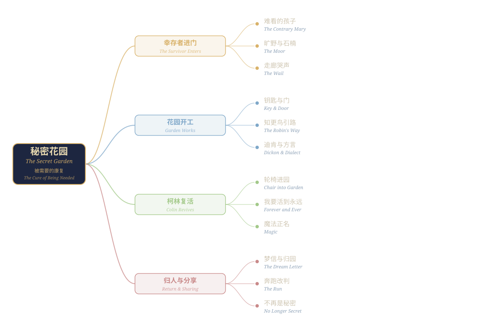

秘密花园
〇 · 书籍信息
基本信息
| 书名 | 《秘密花园》（The Secret Garden）——被锁十年的园子：钥匙藏在土里，门藏在藤下，花园不是被找到的，是被一起劳动出来的 |
|---|---|
| 作者 | 伯内特（1849–1924），生于曼彻斯特、长居美国；畅销书作家（《小公子》《小公主》）。她自己的花园是本书的原型与药方——她先治好了自己，才写下这本书 |
| 结构 | 27 章：玛丽（坏脾气的幸存者）与柯林（相信自己要死的少爷）两条康复线，以迪肯（自然的孩子）为中间变量——三人构成一部康复三角：一个改变两个，两个再改变庄园 |
| 体裁 | 儿童文学 + 「魔法」（magic）自然疗法叙事：全书后半的「魔法」是地道的正面词——身体与心灵的自愈机制 |
| 一句话 | 坏脾气的女孩和「要死了」的男孩，在一座锁了十年的花园里互相种活：药方只有三样——泥土、同伴和被需要。 |
一 · 核心主题总览
一座荒园的复绿工程里埋着四组母题：① 被需要的康复（全书引擎）
玛丽被印度仆人伺候到十岁却「没人要她」；柯林被全员照顾却觉得自己要死。两人在花园里第一次「被需要」：给彼此保密、给植物留位置——康复的第一味药不是运动，是角色。
② 脾气与身体的双向门
霍乱夺走玛丽的父母，她活下来却「 disagreeable-looking」；柯林把自己锁进「驼背与早夭」的恐惧。伯内特的处方直接：坏情绪让人枯萎，好胃口让人复活——食欲在本书是心电图。
③ 自然的「魔法」
「Magic」一词在后半部反复出现：不是超自然，是身体的自愈与生命的系统——伯内特在 1911 年就写出了「自然疗法」的正名书：泥土是最好的医生。
④ 父亲的归来与家的重建
克雷文先生十年流亡，靠一封「梦里的信」与儿子奔跑的身影回园——荒园的钥匙最终不是钥匙，是一个愿意回来的父亲。
二 · 第一段 幸存者进门—— 玛丽 · 旷野 · 哭声 ——
没人要的孩子穿过旷野
开篇即全丛书库里最冷的开场之一：「当玛丽·伦诺克斯被送去米瑟斯韦特庄园投奔叔叔时，人人都说她是从没见过的最难看的孩子。」——霍乱夺走一切，她活着，并被「活着」这件事弄得很坏。约克郡旷野的风、女仆玛莎的碎嘴、知更鸟的第一眼——伯内特的康复计划从「被诚实地描述」开始：玛丽被说得难看，反而第一次被看见。
◆ 语言学习 · 开场 · 旷野
| disagreeable /ˌdɪsəˈɡriːəbl/ | adj. 难相处的，难看的 —— 例句：the most disagreeable-looking child（开篇）。开篇的诚实：不美化主角 |
|---|---|
| moor /mʊə/ | n. 旷野（约克郡石楠荒原）—— 例句：across the moor（旅程）。moorland n.；呼啸山庄同款地理 |
| gorse? →(改) heather /ˈheðə/ | n. 石楠花 —— 旷野的植被色卡：紫色的荒野——英国文学的配色常识 |
| contrary /ˈkɒntrəri/ | adj. 倔强的 —— 例句：Mistress Mary, quite contrary（ nursery rhyme 化用的章名）。儿童歌谣入书名 |
句型 ｜ 「When Mary Lennox was sent to Misselthwaite Manor to live with her uncle, everybody said she was the most disagreeable-looking child ever seen.」——when 状语 + everybody said 的公共视角开场：用「所有人的评价」给人物开秤，再让她逐页改价——儿童文学的诚实开局。
走廊里的哭声
宅子里夜夜有哭声：玛莎说是「风」，玛丽循声找去——柯林，被当作将死的少爷，夜夜对自己尖叫。两个被囚的孩子（一个被锁在病室，一个被锁进自己的坏脾气）在走廊尽头相认——全书的中点：康复从此从「独自」变成「结伴」。
◆ 语言学习 · 哭声 · 相认
| wail /weɪl/ | n. 恸哭 —— 例句：the wail in the corridor（哭声）。wail of wind 双关：风与孩子共用词——伯内特的悬念设计 |
|---|---|
| hysterics /hɪˈsterɪks/ | n. 歇斯底里发作 —— 例句：colic/hysterics（柯林的夜）。情绪失控的旧医学词汇 |
| chamber /ˈtʃeɪmbə/ | n. 房间（老式）—— 例句：a chamber on the same floor（柯林病室）。chambermaid 词族 |
| tramp? →(改) hunchback /ˈhʌntʃbæk/ | n. 驼背者 —— 柯林的恐惧源：父亲的驼背传说——他被一句话判了刑：心理暗示的医疗事故 |
习语 ｜ It's the wind 是风声——大人的标准答案；follow the sound 循声而去——玛丽的本能：全书所有转折都始于「不把大人的答案当答案」。
三 · 第二段 花园开工—— 知更鸟 · 钥匙 · 迪肯 ——
钥匙、门与知更鸟
知更鸟在翻土处停了又停——玛丽掘出十岁的钥匙；风把常春藤掀起一角——门自己亮了相。伯内特的叙事经济：钥匙由鸟引出，门由风打开——自然的语法从不越权，只是配合。荒园里最后一片活物：老蔷薇、成排的球茎冒尖、墙上的桃枝——死园里有全部活着的证据，只缺人手。
◆ 语言学习 · 花园 · 开工
| key /kiː/ | n. 钥匙 —— 例句：the key to the garden（章名）。key 一词三义：钥匙/关键/调——本册当钥匙讲 |
|---|---|
| ivy /ˈaɪvi/ | n. 常春藤 —— 例句：the ivy swinging aside（门帘）。墙的绿帘；secret 的视觉语法 |
| bulb /bʌlb/ | n. 球茎 —— 例句：bulbs coming up（春信）。园艺词：球根花卉——复活的意象库 |
| prune? →(改) trowel /ˈtraʊəl/ | n. 小铲 —— 例句：digging with a trowel（开工）。园艺工具链：spade/trowel/fork |
句型 ｜ 「Something white was swinging aside… it was the ivy, and behind it stood the door.」——悬念句的两拍：白影（what）→ 揭晓（it was…）。儿童文学的悬念公式：先给一个误认的名词，再让名词改名。
迪肯：自然的方言
迪肯十二岁，能跟所有动物搭话，讲约克郡土话（tha'、aye、missel thrush）；他把玛丽的秘密花园当成两个人的工程。他是全书唯一的「零故障人物」：不是完美小孩，是「在自然里泡大的人」——自然的语法从他嘴里说出来。他带来工具、种子与羊羔——荒园的复活开始有了施工队。
◆ 语言学习 · 迪肯 · 方言
| tha' (= thou) | 汝（约克郡口音）—— 迪肯的称呼语：方言即亲密——标准英语是给外人的 |
|---|---|
| aye /eɪ/ | int. 是啊（北方口语）—— 例句：Aye, that's it（迪肯语气）。英语文学的方言调色盘 |
| missel thrush | n. 米瑟斯画眉 —— 例句：the nest of the missel thrush（章名）。园丁的朋友：知更鸟之外的另一只鸟 |
| lad /læd/ | n. 少年 —— 例句：a Yorkshire lad（迪肯）。lassie/lad 词族——北方口语的性别成对词 |
习语 ｜ Whatten art tha' doin'? 你在干啥（方言问句）——迪肯的打招呼方式；working together keeps folk strong：劳动结伴=康复配方——伯内特把社会学写成了园艺学。
四 · 第三段 柯林的复活—— 会诊 · 「我要活到永远」 · 魔法 ——
把少爷抬进花园
柯林的轮椅第一次推进花园：阳光、蜜蜂、玫瑰香一起「围诊」——他闻到土腥味的第一口深呼吸，比十年医嘱都有效。伯内特的治疗学：把病人抬到生活里，而不是把生活抬到病床前。此后每日晨会（garden council）：播种、扶苗、记录生长——三个孩子的病历本是一本园艺日志。
◆ 语言学习 · 康复 · 施工
| wheelchair /ˈwiːltʃeə/ | n. 轮椅 —— 柯林十年的人生边界：被推出病室的那天，边界开始溶解 |
|---|---|
| sunlight /ˈsʌnlaɪt/ | n. 阳光 —— 处方的主药：本书的 sunlight 与 16 册（局外人）的太阳隔空对话——同一个太阳，一册致郁一册治愈 |
| seed /siːd/ | n. 种子 —— 例句：sowing seeds（晨会主课）。播种词族：sow/seedling/bloom |
| breathe /briːð/ | v. 呼吸 —— 例句：breathe in the moor air（柯林的第一课）。呼吸作为仪式：康复的第一节体育课 |
句型 ｜ 「I shall get well! I shall live forever and ever!」——柯林的名句：两个 shall 的强调重复（15 册记过重复强调法）。儿童文学的语法：意志用将来时说三遍，身体就信了。
「Magic」与准男爵的长腿
柯林给身体的自愈机制命名：「Magic」——不是魔法故事里的咒语，是种子发芽、肌肉生长、心情转阳的那套系统。他练习站、练习走，直到能在父亲面前跑过花园长径——全书的高潮是一次「跑步」：十年病室里的一句话（你会驼背会早死）被二十米奔跑改判。
◆ 语言学习 · 魔法 · 改判
| magic /ˈmædʒɪk/ | n. 魔法 —— 本书的正名操作：Magic=生长机制；与 wizardry 辨析：这里不施咒，只发芽 |
|---|---|
| muscle /ˈmʌsl/ | n. 肌肉 —— 例句：new muscles（锻炼）。flesh/muscle 词族；身体的复利 |
| strut? →(改) race? →(改) sprint? →(改) stride /straɪd/ | v. 大步走 —— 例句：striding down the walk（奔跑改判）。stride 的壮实感——柯林的动词 |
| straighten /ˈstreɪtn/ | v. 挺直 —— 例句：shoulders straightening（体态复原）。straight adj.；驼背恐惧的和解词 |
习语 ｜ the magic is in you—in me—in everyone——柯林的科学陈述；make it grow 让它生长——全书把「希望」重新定义为可耕作的项目，不是祈祷。
五 · 第四段 归人与分享—— 梦信 · 回园 · 分享合法化 ——
一封「梦里写就」的信
克雷文先生在异国度假屋被「梦里的声音」唤回园子——伯内特把超自然压到最低：更像是「他自己终于想念到极点」。他沿小径走向花园，看见儿子奔跑——全书没有一句「我爱你们」：父亲的归来本身就是情书；园门的藤蔓比门更诚实。
◆ 语言学习 · 归人 · 家
| dream /driːm/ | n. 梦 —— 例句：a letter written in a dream（梦信）。浪漫化的低配超自然：伯内特的手法边界 |
|---|---|
| latch /lætʃ/ | n. 门闩 —— 例句：the latch of the gate（园门）。latchkey kid 词源——钥匙与孩子的现代词族 |
| gaze? →(改) wander? →(改) hasten /ˈheɪsn/ | v. 赶往 —— 例句：he hastened to the garden（归园）。haste n.；归心动词 |
| share /ʃeə/ | v. 分享 —— 结尾主题：花园从「秘密」变成「开放工程」——治愈的终点是把药方分享出去 |
句型 ｜ 「And they ran… laughing through the trees to the garden.」式结尾句——伯内特的收束语法：奔跑 + 笑声 + 地点三连：儿童文学的 happy ending 是一台摄影机，只拍动作不拍议论。
为什么要带孩子读这本书
一百年后的孩子已经不缺「照顾」，缺的是「被需要」——本书的处方反而更对症了。它的教育哲学只有一条：不要替孩子把生活抬到床前，要带他们去泥土里认领一块自己的地（「Might I have a bit of earth?」）。这册书适合精读的另一个理由：词汇是黄金标准的儿童文学句式，句子短、动词准、情感真——是仿写情绪段落（孤独、转阳、被需要）的最佳模板库。
◆ 语言学习 · 教育 · 分享
| a bit of earth | 一小块地 —— 柯林的名句（章名）：被认领的土壤=被认领的人生——全书的哲学核心 |
|---|---|
| nurture /ˈnɜːtʃə/ | v. 培育 —— nature/nurture 之辨的文学现场：荒园证明——天性毁不掉，养分能重启 |
| belong /bɪˈlɒŋ/ | v. 属于 —— 例句：somewhere to belong（孩子们的归属感）。belongings n. 财物——同词根的两条路 |
| harvest? →(改) replenish? →(改) sprout /spraʊt/ | v. 发芽 —— 例句：green points sprouting（春信）。sprout up；生长动词链 |
习语 ｜ a bit of earth 一小块地——本书的哲学句；where you tend a rose, my lad, a thistle cannot grow——迪肯母亲的名言：照料玫瑰的地方长不出蓟——注意力决定土壤的物种。
六 · 人物图鉴与成长弧线—— 主角配角 · 一张表看穿 ——
主要人物
玛丽·伦诺克斯 Mary Lennox——主角：坏脾气的幸存者。弧线：无人要的「难看孩子」 → 持钥者 → 园丁 → 朋友的建造者。她治愈别人的顺序：先被荒野诚实地说难看，再被劳动诚实地改写。
柯林·克雷文 Colin Craven——「要死了」的少爷：十年病室的心理囚徒。弧线：夜半尖叫 → 花园晨会 → 站立 → 奔跑改判。他被一句话判刑，又被一块泥土改判——全书最大的医学梗。
迪肯 Dickon——自然的孩子：羊、狐狸、乌鸦的伙伴，约克郡方言的精灵。零故障人物。他是全书唯一的变量：把两个人的康复工程变成三个人的节庆。
克雷文先生 Mr Craven——父亲：十年流亡者。弧线：闭园 → 梦信 → 归园见奔跑。钥匙最终交还给他：治愈的终点是家人愿意回来。
次要人物（功能位）
| 玛莎 Martha | 约克郡女仆、迪肯的姐姐：碎嘴而温暖——她给玛丽讲的故事是迪肯的「预告片」 |
|---|---|
| 本·韦瑟斯塔夫 Ben Weatherstaff | 老园丁：替死去的夫人守园十年——他证明：忠诚可以是一种园艺 |
| 梅德洛克太太 Mrs Medlock | 管家：规矩的执行者——她锁的是门，锁不住风 |
| 知更鸟 Robin | 全书的第一向导：引路、监工、见证——自然的语法里，鸟是本章的叙事者 |
七 · 主题与象征—— 每个道具都在说话 ——
| 钥匙 ↔ 被认领的权利 | 埋在土里十岁的钥匙：权利一直都在，只是需要有人去挖 |
|---|---|
| 门后的藤 ↔ 秘密的厚度 | 常春藤盖住门：秘密不是被藏起来的，是被忘记的 |
| 球茎冒尖 ↔ 复活的证据 | 死园里成排的绿尖：生命只休眠，不缺席 |
| 晨会 ↔ 康复的施工队 | 三个孩子的园艺日志：病历本的最佳形态是种植记录 |
| 奔跑 ↔ 改判 | 二十米小径：十年的一句话判决，被一次奔跑推翻 |
| 梦信 ↔ 家的引力 | 父亲的归园：治愈的终点不是药，是有人愿意回来 |
八 · 写作手法赏析—— 怎么写，就能怎么学 ——
① 诚实的开场
「人人都说她是最难看的孩子」——不美化主角是儿童文学的勇气：被如实看见，才有被改变的余地。
② 双线康复与三角结构
玛丽线与柯林线以迪肯为变量——康复叙事的最优解：一个人改变两个人，两个人再改变一座庄园。
③ 感官引信
哭声、风、土腥味、蜜蜂——每章用一个感官事件推进情节：儿童文学的注意力管理。
④ 方言的亲密语法
tha'、aye 的约克郡土话——标准英语给外人，方言给家人：语言即圈层的文学显影。
⑤ 动作收束
奔跑、大笑、分享——结尾不议论，只拍摄动作：情绪让镜头说话。
九 · 名段欣赏—— 原文精读 · 逐段赏析 ——
十 · 金句摘录—— 14 条 · 中英对照 · 带出处 ——
"Where you tend a rose, my lad, a thistle cannot grow."照料玫瑰的地方长不出蓟，孩子。—— 迪肯母亲的名言
"Is the spring coming?"春天要来了吗？—— 柯林之问
"I shall get well! I shall live forever—and ever—and ever!"我会好起来！我会活到永远——永远——永远！—— 第二十章
"Might I have a bit of earth?"我可以要一点儿泥土吗？—— 第十二章章名
"When Mary Lennox was sent to Misselthwaite Manor… everybody said she was the most disagreeable-looking child ever seen."人人都说，玛丽·伦诺克斯是从没见过的最难看的孩子。—— 第一章（PDF 译文）
"The two worst things as can happen to a child is never to have his own way—or always to have it."孩子最糟的两件事：从来做不了主——或者永远说了算。—— 玛莎转述母亲
"不是风。风不会这样哭。"—— 第五章 · 哭声
"钥匙躺在土里，知更鸟在旁边跳来跳去。"—— 第七章
"它来了！"—— 第十九章章名
"让自己做点儿什么，人就不会想太多。"—— 劳动哲学
"魔法在你身上——在我身上——在每个人身上。"—— 第二十三章 · Magic
"他沿着长径跑过去——十年的一句话判决被改判了。"—— 奔跑改判
"秘密花园不再是秘密。"—— 结尾
"被锁上的园子，是被一起劳动出来的。"—— 全书主题
十一 · 拓展阅读—— 原文 · 词条 · 译文 ——
原文与文本
- The Secret Garden — Project Gutenberg —— 公版全文；与外研社双语对照精读
- The Secret Garden — Wikipedia —— 创作史（ serialized → 全本）与「magic」的解读谱系
作者与谱系
- Frances Hodgson Burnett — Wikipedia —— 生平与她的花园：本书的原型药方
- Horticultural therapy —— 园艺疗法词条：本书被引用的现代科学注脚
十二 · 个人感悟与心得—— 三点心得 ——
钥匙 · 晨会 · 奔跑
这册书最打动我的，是它对「照顾」的批判：玛丽被伺候到十岁、柯林被照顾了十年——两个人都病着。康复的第一味药不是更好的照顾，是「被需要」：给彼此保密、给植物留位置、给朋友留一个只有你能顶的班。对当下被过度照顾、又普遍低能量的孩子（和大人），这个处方反而更对症。 「Magic」的正名是本书的思想遗产：伯内特不给它超自然解释——种子发芽、肌肉生长、心情转阳，这套系统她命名为魔法。把希望定义为可耕作的项目，而不是祈祷——1911 年的自然疗法正名书，今天读依然先进。 学英文层面，这是全套书库里最适合「休息日」的一册：儿童文学的句式是黄金标准——句子短、动词准、感官密。把「哭声不是风」「钥匙在土里」这类句子抄下来仿写，你的英文叙事会多出一股干净的空气。约克郡方言（tha'、aye）当彩蛋听，别当考试学。—— 伯内特在自己的花园里写下这本书：她先治好了自己，才敢把这药方印出来。（A bit of earth.）
十三 · 一页速查（复习用）
| 全书骨架 | 坏脾气的幸存者 → 哭声与相认 → 钥匙与开工 → 柯林复活 → 归人与分享 |
|---|---|
| 核心命题 | 康复的第一味药是「被需要」；魔法=可耕作的生长机制 |
| 必背表达 | a bit of earth / mistress mary quite contrary / the magic is in you / where you tend a rose… |
| 三角结构 | 玛丽（被改变的）× 柯林（改变的）× 迪肯（变量） |
| 一句话总结 | 药方只有三样：泥土、同伴和被需要 |
十四 · 全书思维导图—— 一图纵览 ——

一图纵览全书骨架 · 中英双语对照 · 手机端可左右滑动查看全图